Module 6 turns the Grad Café analytics app from Modules 3–5 into four cooperating containers. The web service no longer scrapes, loads or computes anything: its two buttons publish tasks to RabbitMQ and return at once, and a separate worker does all writing to PostgreSQL. The whole stack starts with one command on a clean machine, the two application images are published on Docker Hub, and GitHub Actions runs Pylint and Pytest for the module on Python 3.11. The development environment was Docker Desktop 4.47 (Engine 28.4.0, Compose v2.39.4) on an Intel Mac.
| Service | Image | Role |
|---|---|---|
db | postgres:16 |
Holds applicants, ingestion_watermarks and analysis_summary in the named volume
pgdata. Health check pg_isready. Its port is not published to the host. |
rabbitmq | rabbitmq:3.13-management |
Task queue. Health check rabbitmq-diagnostics -q check_port_connectivity, which passes only once the
AMQP listener accepts connections. Management UI published on port 15672. |
web | vixbot/module_6:web-v1(build src/web) |
Flask app on 0.0.0.0:8080 (published). Reads the stored analysis and applicant rows; the buttons publish
tasks. Connects as the read-only role gradcafe_web. |
worker | vixbot/module_6:worker-v1(build src/worker) |
Initialises the database at startup, then consumes tasks_q. Mounts src/data (seed JSON) and
src/db (shared database modules) read-only. restart: unless-stopped. |
web and worker start only after db and rabbitmq report healthy
(depends_on: condition: service_healthy). Each image is built from its own folder, exactly as the assignment's
Dockerfiles give it (python:3.11-slim, requirements installed first, USER 1000). The worker image
also bakes in chromedriver for linux64 at build time (build argument CHROMEDRIVER_VERSION, default
154.0.8037.92) with only the four libraries it links against, so nothing is downloaded at runtime.
Every setting in docker-compose.yml has a development default (${VAR:-default}), so the stack
starts with no .env; the defaults are development-only credentials for a database that is not reachable
from outside the compose network, and a .env file overrides them.
/pull-data or /update-analysis.publisher.publish_task() connects with RABBITMQ_URL, declares the durable direct exchange
tasks, the durable queue tasks_q and their binding (routing key tasks), turns on
publisher confirms, and publishes compact JSON {"kind", "ts", "payload"} with delivery_mode=2
and mandatory=True. The connection is closed in finally.{"status": "queued", "task": ...}, or 503 if the publish fails
(pika.exceptions.AMQPError, including an unroutable or nacked message) or RABBITMQ_URL is missing.GET /api/status every 2 seconds for up to
60 seconds and reloads the page when either timestamp ("Analysis last updated", "Data last updated") changes.| Task kind | Queued by | Worker handler |
|---|---|---|
scrape_new_data | Pull Data | handle_scrape_new_data: reads the watermark with SELECT … FOR UPDATE (or payload["since"]),
scrapes entries newer than it through the host's Chrome session, inserts them with ON CONFLICT (url) DO NOTHING,
advances the watermark with GREATEST, and recomputes the analysis — all in one transaction. |
recompute_analytics | Update Analysis | handle_recompute_analytics: runs every analysis query and replaces the single analysis_summary row. |
At every start the worker runs load_data.initialize_database() under a PostgreSQL advisory lock, so two workers
starting together cannot both seed. It creates the three tables if they are missing and, only when applicants is
empty, loads /data/applicant_data.json (60,025 records; 60,024 rows load, one record has no URL) and sets the
watermark to the highest Grad Café result ID in the seed, 1,020,478. It then computes the analysis if none is stored, and
creates or updates the read-only role gradcafe_web: CONNECT, schema USAGE and SELECT on the three tables only.
Every run revokes the role's other privileges first, so re-running is idempotent. Until all of this has committed, the web
page answers 503 "The database is being initialised… This page refreshes automatically." and reloads every 5 seconds.
basic_qos(prefetch_count=1) — one unacknowledged message at a time.basic_ack. A test checks from a second database
connection, at the moment of the ack, that the data is already committed.try/finally tracks whether the message was acked; if not, it rolls back and calls
basic_nack(requeue=False). Expected failures (database errors, the browser failing or not being attached,
retries exhausted, a bad payload) are logged and the worker continues; malformed JSON, non-object bodies and unknown
kinds are rejected the same way. Anything unexpected propagates after that cleanup and stops the worker, which Docker
restarts.| Check | Result |
|---|---|
| Docker installed | docker run hello-world succeeds (Figure 1). |
docker compose config | Valid; every variable resolves to its default with no .env. |
Clean first start (down -v, then up --build -d) | up finished in 20 s; the page answered 503 while the
worker seeded, then 200 about 48 s later. Worker log: 60,024 rows inserted, watermark 1,020,478, initial analysis computed
(Q1 = 32,344). Worker and web restarts: 0. |
| All services up | db and rabbitmq healthy, web on 8080, worker running (Figure 2). |
| Page | GET / returns 200 with the analysis (Figure 3). |
| Update Analysis | 202 {"status":"queued","task":"recompute_analytics"}; worker logged the task done; computed_at
moved from 18:01:28 to 18:12:48. In a browser the page showed the queued banner (Figure 4), then reloaded by itself
and showed the new "Analysis last updated" time. |
| Pull Data with no Chrome | 202; worker logged PullPreconditionError, nacked without requeue and kept running (0 restarts);
tasks_q empty, 0 redelivered. |
| Pull Data with the host Chrome session | From inside the worker, host.docker.internal resolved to 192.168.65.254 and
/json/version returned Chrome/154. The pull read 3 pages and inserted 29 new rows; the watermark moved from 1,020,478 to
1,020,507 and the analysis was recomputed in the same transaction. |
| RabbitMQ topology | Exchange tasks (direct) and queue tasks_q both durable, bound with key tasks, one consumer
(Figures 5–8). |
| Non-root containers | id shows uid 1000 in both web and worker. |
| Persistence | down then up -d kept the volume: row count, watermark and analysis unchanged; worker logged
"applicants already has rows: seed skipped". |
| Read-only web role | Connected as gradcafe_web, SELECT works on all three tables; INSERT, UPDATE, DELETE and CREATE TABLE are
refused by PostgreSQL with permission errors. |
| Docker Hub | Repository public; web-v1 and worker-v1 pulled anonymously; the stack ran from the tagged images
(page 200, both buttons 202) (Figures 9–10). |
| Tests and lint | 375 tests pass with 100% statement coverage; Pylint 10.00/10. GitHub Actions "Module 6 CI" is green on Python 3.11 (Figure 11). |
docker pull vixbot/module_6:web-v1 docker pull vixbot/module_6:worker-v1 git clone https://github.com/Vix-T/jhu_software_concepts.git cd jhu_software_concepts/module_6 docker compose pull web worker docker compose up -d --no-build # or: docker compose up --build
Then open http://localhost:8080 (RabbitMQ management: http://localhost:15672, guest/guest, development only).
Pull Data additionally needs a Chrome started on the host with --remote-debugging-port=9222 and the Grad Café
Cloudflare check cleared by hand; the README gives the exact command.
WEB_DB_PASSWORD looks the same to the web as a role not created yet, so the page keeps showing the initialising message.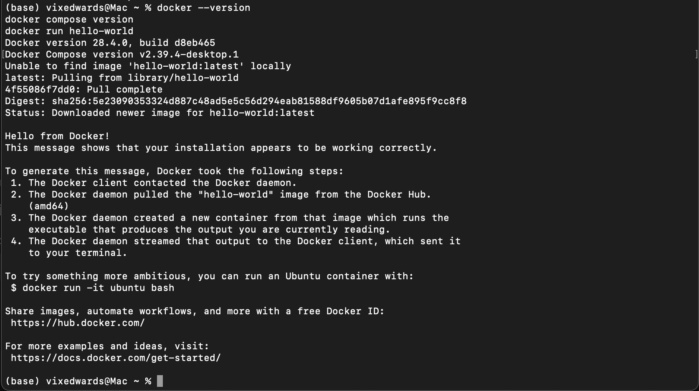
docker run hello-world succeeds.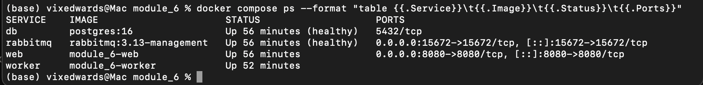
docker compose ps: db and rabbitmq healthy, web publishing 8080, worker running
(taken before the images were tagged for Docker Hub, hence the local image names).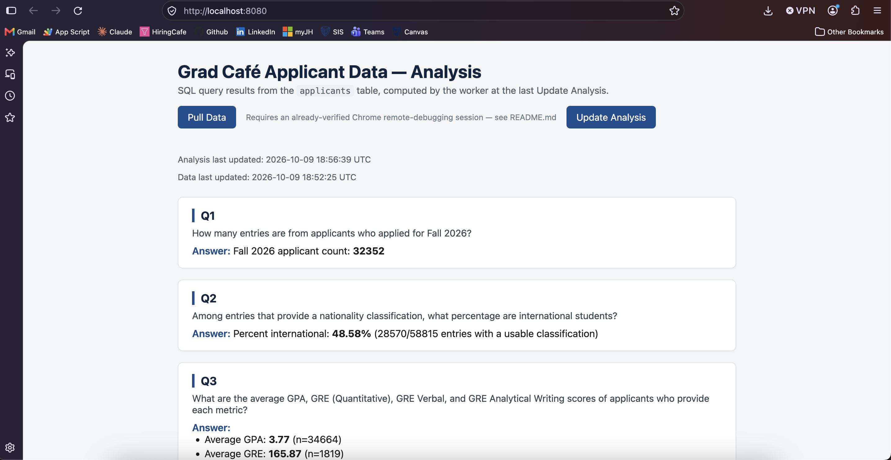
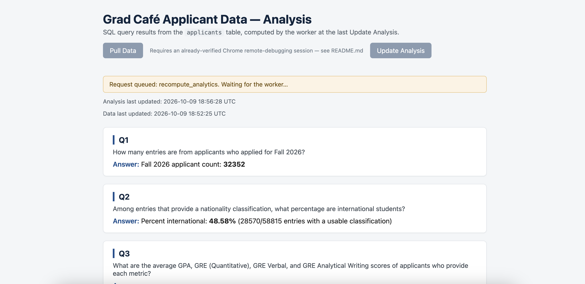
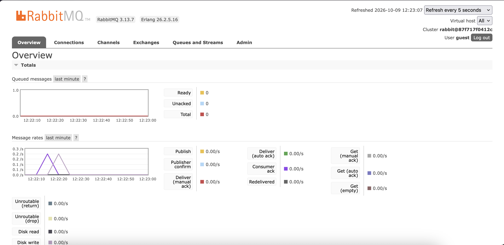
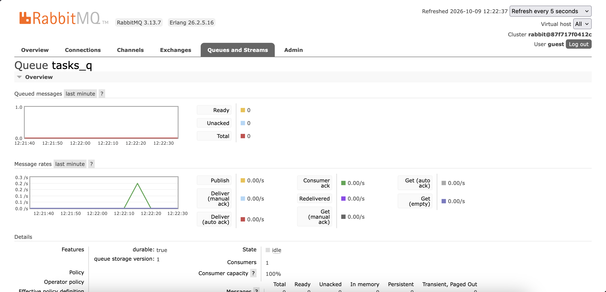
tasks_q: durable, one consumer (the worker), nothing ready or unacknowledged.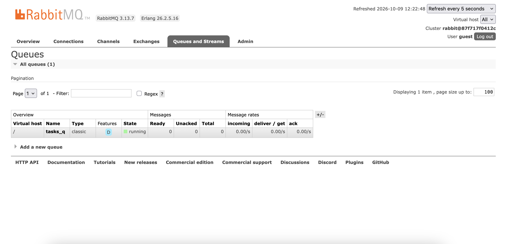
tasks_q, classic, durable (D), running.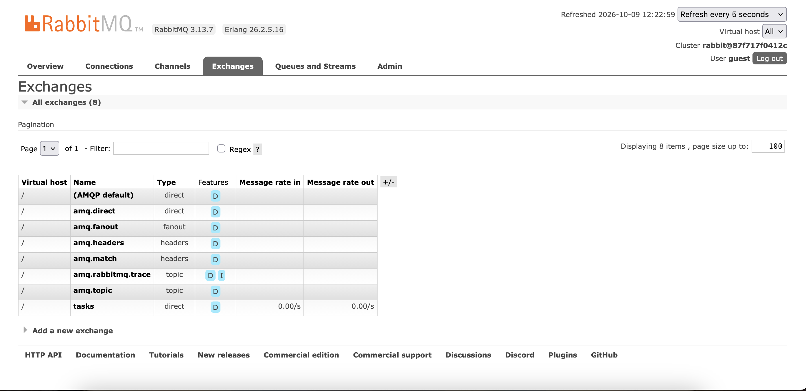
tasks, direct and durable, alongside RabbitMQ's built-in exchanges.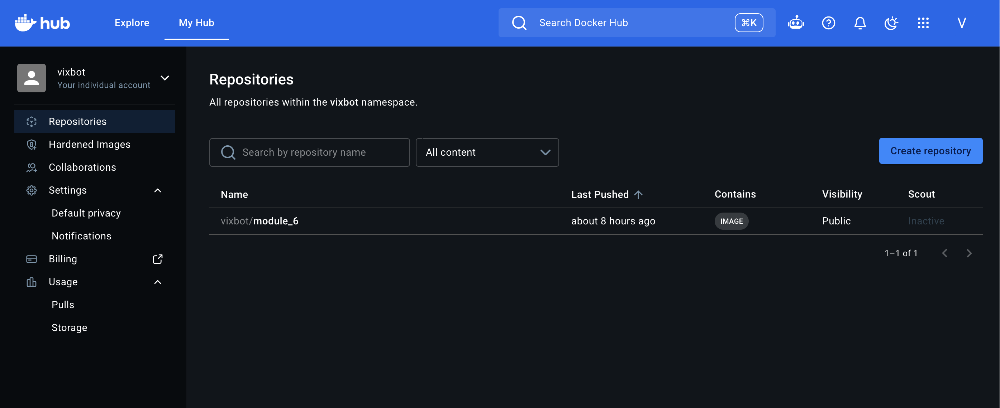
vixbot/module_6, visibility Public.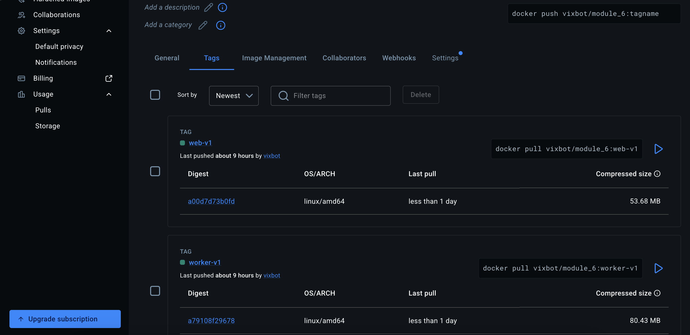
web-v1 and worker-v1 (linux/amd64) with their pull commands.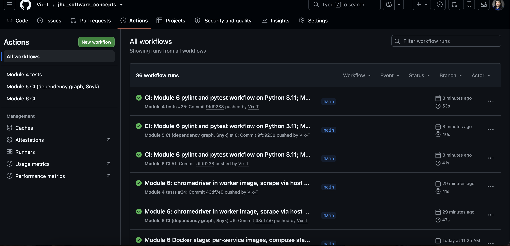